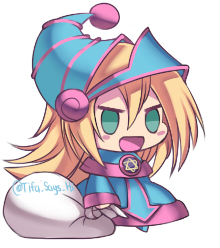

Já é Natal no Experiences!

Nesta quarta-feira 02/12, o servidor Experiences mudou sua decoração de Halloween para a decoração de Natal, juntamente com seu nome que foi de Spooky Experiences para Quirma Experiences. O nome Quirma é uma referência aos vídeos de natal no Sr. Pelo, onde Mockey, uma versão retardada de Mickey (sic.) apronta diversas trapalhadas e confusões tentando salvar o natal, mas os resultados de suas tentativas são sempre inusitados, surpreendendo os fãs a cada ano. O youtuber chileno também faz outras diversas animações em seu canal, sempre contando com o seu estilo e seu humor, que são como se fosse um de Comichão & Coçadinha misturado com a melhor sonoplastia do youtube.
Inicio